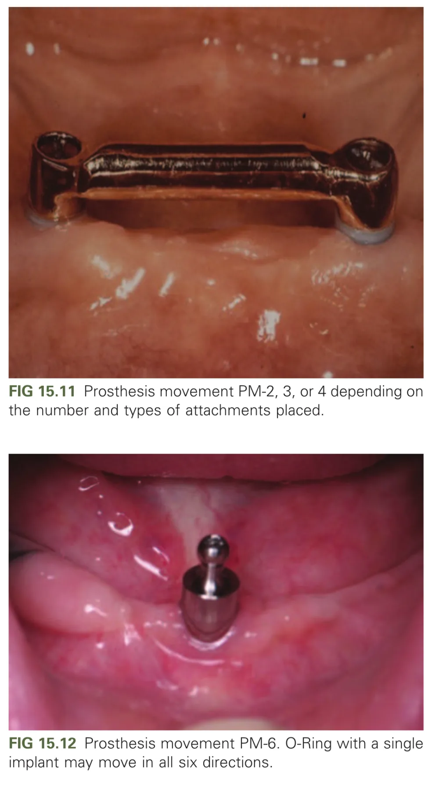

نسخه استخراجشده؛ ترجمه یا تأیید علمی انجام نشده است. وضعیت: captured
عارضهی این درس یک نام دارد: «درک نکردن دامنهی گستردهی گیر اوردنچر».
و علتش (اتیولوژی) روشن است: «یک عارضهی رایج در طرح درمان اوردنچر، بهکار بردن همان طرح درمان «مورد علاقه» — یعنی همان شمار و موقعیت ایمپلنت — برای همهی بیماران است.»
و روشنترین حکم بالینی در این باره: «به عبارت دیگر، اوردنچر دوایمپلنتی نباید تنها طرح درمانی باشد که به بیمار پیشنهاد میشود.»
پیشگیری از این عارضه، با سه تعریف دقیق آغاز میشود. پروتز نهایی باید از پیش تعیین شود و به سه عامل مربوط است:
و یک تصور نادرست رایج بیماران: «این اغلب یک تصور نادرست بیماران است، چون آنها باور دارند که نباید هیچ حرکتی در پروتز وجود داشته باشد.» — در حالی که در RP-5، حرکت بخشی از طراحی است.
و اکنون یک هدف کلی که شاید غافلگیرت کند:
«باید تأکید کرد که بیشتر اوردنچرهای مندیبل باید طوری طراحی شوند که در نهایت به یک پروتز RP-4 (یعنی کاملاً ایمپلنتساپورتد) برسند.»
و اگر بیمار چیز کمتری بخواهد؟ «اگر بیمار پروتز کمگیرتر، با ساپورت کمتر و پایداری حداقلی بخواهد، بیمار باید معایب ذاتی آن را بفهمد.»
و توصیهای که «بهشدت توصیهشده» است: «پزشک همهی طرحهای درمانی ممکن اوردنچر را به همهی بیماران ارائه کند.» به دو دلیل:
و هدف نهایی این کار: «این کار از انتظارهای غیرقابلقبول بیمار پس از تحویل پروتز پیشگیری میکند.» — یعنی بخش بزرگی از پیشگیری از عوارض اوردنچر، در جلسهی مشاوره اتفاق میافتد نه در اتاق عمل.
و چه چیزی این سهگانه را تعیین میکند؟ «شکایتهای اولیهی بیمار، آناتومی بافت سخت و نرم، خواستههای پروتزی، و تعهد مالی او مقدار ساپورت، گیر و پایداری ایمپلنت را تعیین میکنند.»
حالا مفهومی که بسیاری از خطاهای بالینی از آن میآید — و با یک تناقض ظاهری آغاز میشود:
«یک اوردنچر طبق تعریف یک پروتز متحرک است؛ با این حال در عملکرد یا پارافانکشن ممکن است اصلاً حرکت نکند — یعنی بهدلیل مکانیسم گیر، ممکن است ثابت شود.»
و اینجاست که یک اشتباه ظریف بالینی زاده میشود:
«پزشک ترمیمکننده باور دارد که اوردنچر سهایمپلنتی بار اکلوزالی پروتزی کمتری دارد، ولی متوجه نیست که یک اوردنچر سهایمپلنتی ممکن است صرفاً بهدلیل طراحی اتچمنتها «ثابت» شود.»
این مقایسه تکاندهنده است: «بهندرت یک پزشک یک ترمیم ثابت تمامقوس را روی سه ایمپلنت میگذارد، بهویژه با کانتیلورهای زیاد. با این حال، سه ایمپلنت قدامی با یک بار متصلکننده ممکن است یک اوردنچر کاملاً ثابت را پشتیبانی کنند — تنها بهدلیل طراحی یا جانمایی اتچمنت.» — یعنی همان چیزی که در حالت ثابت غیرقابلقبول است، در پوشش «متحرک» ناخواسته ساخته میشود.
و هشدار اصلی: «یک اتچمنت ممکن است بهعنوان دارای حرکت در همهی جهات طبقهبندی شود؛ اما استفادهی نادرست از آن، یا ترکیبش با اتچمنتهای دیگر، ممکن است دامنهی حرکت را عوض کند — و این میتواند به نیروهای آسیبرسان بر ایمپلنت یا پروتز بینجامد.»
پس بهجای طبقهبندی اتچمنت، مفهوم «حرکت پروتز» (PM) ساخته شد. منطقش این است: «اتچمنت و حرکت پروتز مستقل از یکدیگرند و باید جداگانه ارزیابی شوند.»
و حرکت میتواند در صفر (رِیجید) تا شش جهت رخ دهد: اکلوزال، جینجیوال، فاسیال، لینگوال، مزیال و دیستال. طبقهبندی PM از PM-0 تا PM-6 را دربر میگیرد:
و تفاوت فنی بار دولدر و هِیدر، که پیامد مکانیکی دارد: بار دولدر در مقطع تخممرغی است و بار هِیدر گرد. کلیپ میتواند مستقیماً روی بار دولدر بچرخد.
و یک عدد مهندسی که ارزش حفظ کردن دارد: «بار هِیدر انعطافپذیرتر است، چون بارهای گرد چهار برابر خم میشوند (نسبت به فاصلهی میان اباتمنتها)، در حالی که سایر شکلهای بار سه برابر خم میشوند.» به همین دلیل اغلب یک اَپرون به سمت بافتی بار هِیدر افزوده میشود تا خمش فلز محدود شود.
اما آن اَپرون یک بهای پنهان دارد: همان چیزی که به سیستم استحکام میدهد، «دامنهی چرخش کلیپ (و پروتز) حول فولکروم را به ۲۰ درجه محدود میکند و مجموعهی پروتز و بار را رِیجیدتر میکند.» — پس سیستم هِیدر را وقتی میتوان برای PM-2 به کار برد که فرم ریج خلفی مساعد و بافت نرم بهقدر کافی پایدار باشد تا چرخش پروتز را محدود کند.
و شرط هندسی که همهی این سیستمها به آن وابستهاند:
«برای اینکه این سیستمها همانطور که طراحی شدهاند کار کنند، اتچمنت لولایی باید عمود بر محور چرخش پروتز باشد. اگر بار هِیدر یا دولدر زاویهدار یا موازی با جهت چرخش مطلوب باشد، پروتز رِیجیدتر میشود و ممکن است شبیه یک سیستم PM-0 شود. در نتیجه سیستم ایمپلنت ممکن است اورلود شود و عوارضی مانند شل شدن یا شکست پیچ پروتزی، تحلیل استخوان کرستال، و حتی شکست ایمپلنت ایجاد کند.»
و یک کاربرد وارونه که نشان میدهد PM-0 همیشه بد نیست: «سیستم بار-کلیپ هِیدر یک اتچمنت کمپروفایل ایدهآل برای یک پروتز RP-4 با PM-0 است. معمولاً این کلیپها روی بار در صفحات چرخش متفاوت در سراسر قوس قرار داده میشوند.» — یعنی PM-0 وقتی عمدی باشد یک طراحی است؛ وقتی تصادفی باشد یک عارضه.
